国・地域の見分け方
- 言語はスペイン語
- ドメインは.ar
- ナンバープレートはモザイクがかかった時に真ん中が黒っぽくなる
- ガソリンスタンドにアルゼンチンの国有石油会社であるYPFの青色のロゴがある
- Google Carが黒色(参考文献 Cameras and Cars - Metagame Guide)
見つかる標識
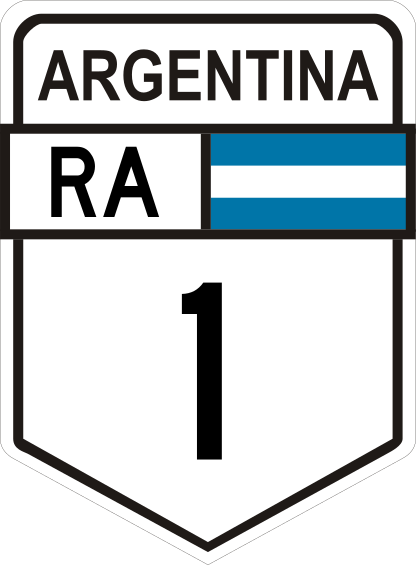
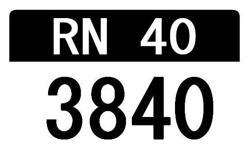
代表的な企業
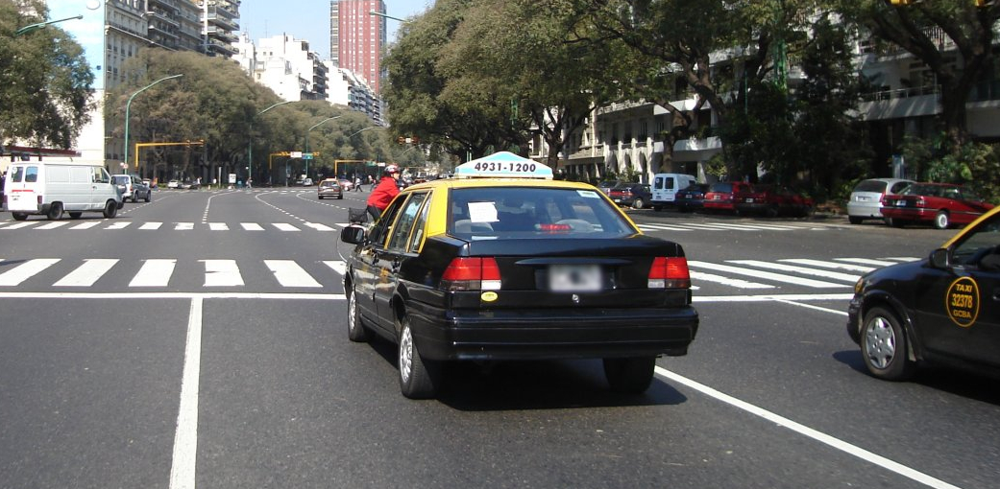

By Quilmeño89 - Own work, CC BY-SA 4.0, Wikimedia Commons
2016年以降に撮影されたものは黒ナンバーでない可能性がある。南米南部共同市場に加盟している国では青色のナンバープレートが共通してみられる(参考文献 外務省 - メルコスール)。
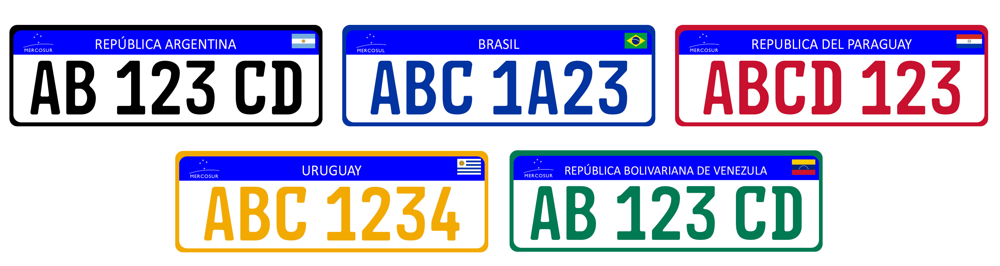
アルゼンチンやウルグアイにありそうな通り名看板。
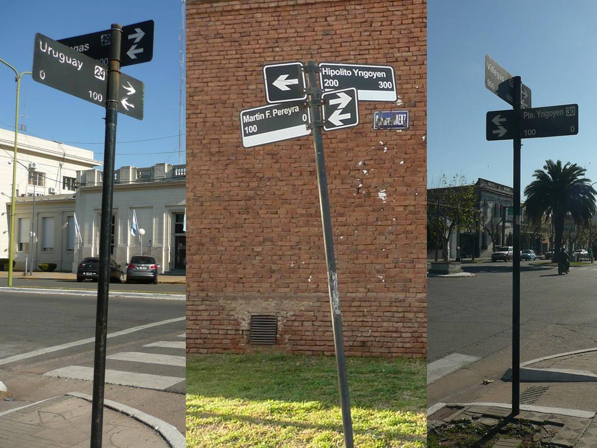
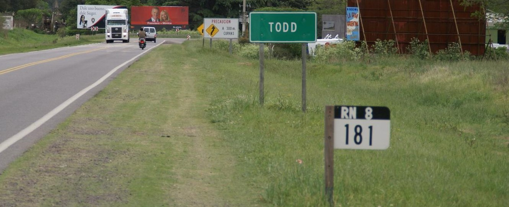
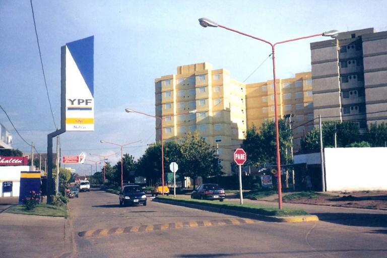
州・地域の絞り込み
- アルゼンチンの最も北東の角と最も北西の角はブラジルっぽい
- 最も農業が盛んな地域はCordoba州

By Someone83 - Own work, CC BY-SA 4.0, Link
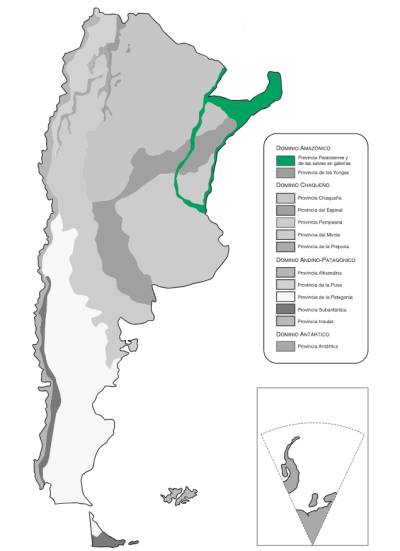
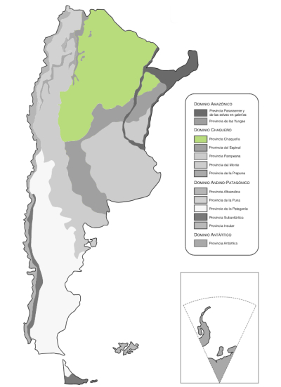
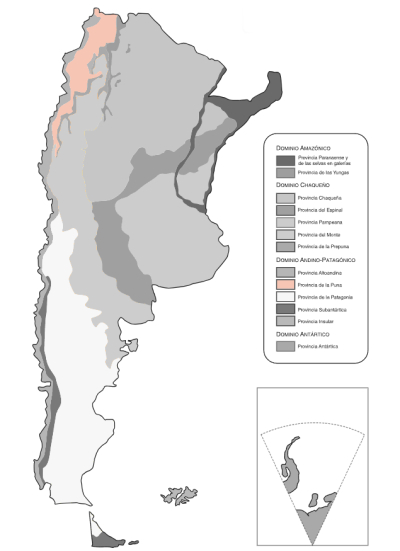
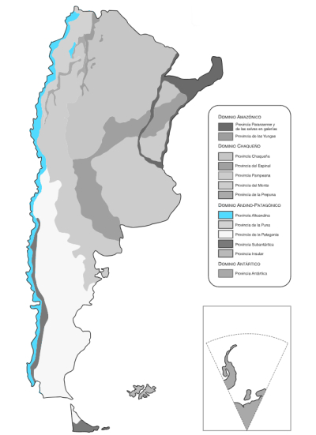
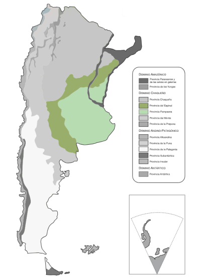
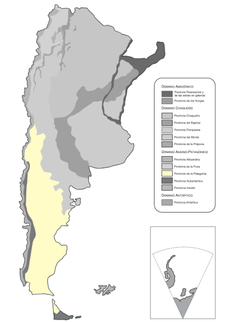
以下はコーンが生産されている地域のマップ
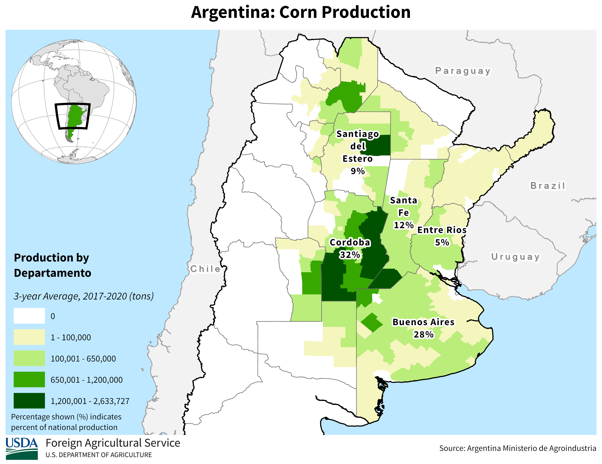
都市・町の絞り込み
- アルゼンチンの最南端にBiblioteca Península Haushという図書館がある
- ブエノスアイレスで「GCBA（Gobierno de la Ciudad de Buenos Aires＝ブエノスアイレス市政府？）」と書かれた紺色と黄色のタクシーが走っている(参考文献 Buenos Aires Jefatura de Gabinete Movilidad)
- 一覧がplonk itにまとめられていたので他はそれを見る
外すと大ダメージ確定なので景色だけ覚えておく。2022年時点では周辺には隠者が数人住んでいるだけらしい(参考文献 Inaugurarán la Biblioteca Haush en Puerto Español)。
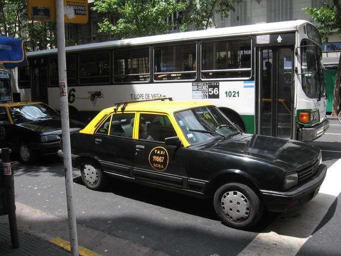
代表的な企業の説明
| 企業名 | コード | 説明 | 決算 | 配当履歴 |
|---|---|---|---|---|
| Yacimientos Petroliferos Fiscales(YPF) | NASDAQ | アルゼンチンの国有石油会社。 | Dividend History | |
| Loma Negra | NASDAQ | アルゼンチン最大のセメント・コンクリート製造業者。 | Dividend History | |
| Grupo Financiero Galicia | NASDAQ | アルゼンチン最大の民間商用銀行。国内銀行業ではおそらく5番目の規模。 | Dividend History |